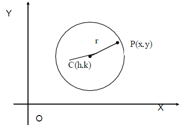
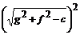

MATHS :: Lecture 08 :: Equation of a circle

Circles
A circle is defined as the locus of the point, which moves in such a way, that its distance from a fixed point is always constant. The fixed point is called centre of the circle and the constant distance is called the radius of the circle.
The equation of the circle when the centre and radius are given
Let C (h,k) be the centre and r be the radius of the circle. Let P(x,y) be any point on the circle.
CP = r CP2 = r2 (x-h)2 + (y-k)2 = r2 is the required equation of the circle.

Note :
If the center of the circle is at the origin i.e., C(h,k)=(0,0) then the equation of the circle is x2 + y2 = 2
The general equation of the circle is x2 + y2 +2gx + 2fy + c = 0
Consider the equation x2 + y2 +2gx + 2fy + c = 0. This can be written as
x2 + y2 + 2gx +2fy + g2 + f2 = g2 +f2 – c
(i.e) x2 + 2gx + g2 + y2 +2fy + f2 = g2 +f2 – c
(x + g)2 + (y + f )2 = 
+ =
This is of the form (x-h)2+ (y-k)2 = r2
\The considered equation represents a circle with centre (-g,-f) and radius
\ The general equation of the circle is x2 + y2 +2gx + 2fy + c = 0
where
c = The Center of the circle whose coordinates are (-g,-f)
r = The radius of the circle =
Note
The general second degree equation
ax2 + by2 +2hxy + 2gx + 2fy +c = 0
Represents a circle if
(i) a = b i.e., coefficient of x2 = coefficient of y2
(ii) h = 0 i.e., no xy term
| Download this lecture as PDF here |